Mudando de branch (ramo)
Para mudar de um determinado ramo, digite:
$ git branch <nome_do_ramo>
- $ indica que você deve usar o usuário comum para fazer essa operação.
- escolha o nome do ramo que você deseja, sem os sinais < >.
Navegando entre snapshots dos commits
Às vezes é necessário verificar com detalhes quais modificações foram feitas no seu código/projeto. Então para navegar entre os snapshots fazemos:
$ git checkout <chave_do_commit>
O que esse comando faz é apontar o HEAD para um determinado commit
Para voltar um commit anterior, digite:
$ git checkout HEAD~1
- HEAD~1 desloca o ponteiro HEAD para o commit anterior ao atual.
Aqui é importante notar que será criado um branch temporário.
Você pode confirmar isso através do comando
$ git branch
Exemplo:
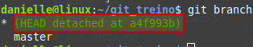Nesse ponto, você estará visualizando as alterações que foram feitas até esse commit.
Após a visualização de todo o conteúdo do(s) arquivo(s), você pode voltar ao ramo principal com o comando:
$ git checkout <nome_do_seu_branch_principal>
Exemplo:
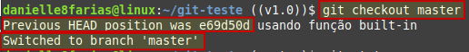Aqui podemos ver uma mensagem onde é mostrado em que posição o ponteiro HEAD estava, ou seja, de onde viemos.
Exemplo de uso do checkout:
Temos no nosso ramo master os seguintes arquivos
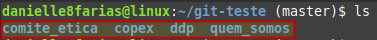E queremos verificar o projeto no ponto indicado pela imagem abaixo
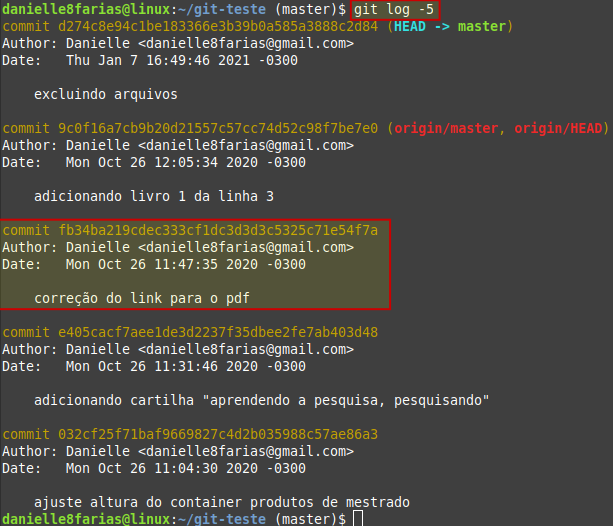Sendo assim, fazemos
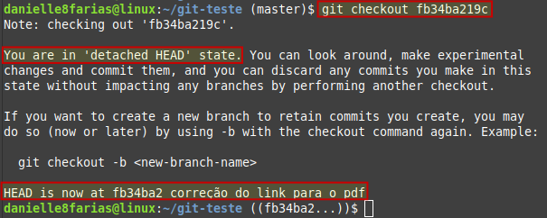Verificando novamente os arquivos do projeto, temos
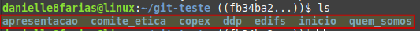Podemos perceber que temos alguns arquivos a mais que não tínhamos quando o ponteiro HEAD estava no último commit.
Aqui podemos ver todo o projeto como ele estava num commit passado. E então retornamos ao ramos principal.
Fazendo alterações
Caso seja necessário alterações no projeto em um snapshot passado, basta fazer um commit após essas alterações.
Para não perder as informações é necessário criar um novo branch, dessa maneira:
$ git branch <nome_do_novo_ramo> <chave_do_útimo_commit>
Em seguida basta ir até o novo branch criado com o comando
$ git checkout <nome_do_novo_ramo>
E, caso seja preciso, fazer o merge com o branch principal.
Exemplo:
Pegando o mesmo exemplo anterior, fiz um commit após algumas alterações.
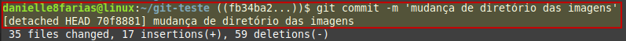Observe que após o commit houve uma mudança na chave
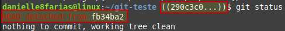Como podemos perceber, essa é a chave do commit feito há pouco
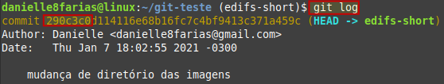Para que esse commit não seja perdido, temos que criar um novo branch com essa chave nova, assim

Aqui, podemos confirmar que o novo branch foi criado
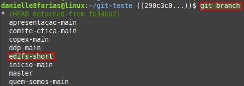Agora só precisamos voltar ao ramo principal
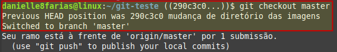O que aconteceu aqui, no fluxo do Git, é algo semelhante ao mostrado na imagem abaixo.
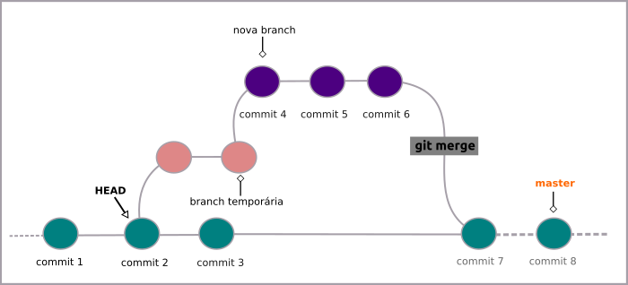Observação:
- Recomenda-se usar o checkout para visualizar as snapshots dos commits apenas quando o Working directory estiver limpo, para evitar conflitos.
Descartando modificações
O checkout também pode ser usado para descartar as modificações feitas em um arquivo, assim
$ git checkout <nome_do_arquivo>
Exemplo:
Temos dois arquivos que foram modificados e queremos descartar as modificações (voltando ao arquivo anterior as mudanças).
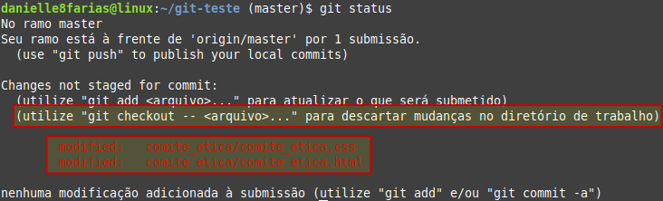
Usando com comando git checkout com os dois arquivos ao mesmo tempo: